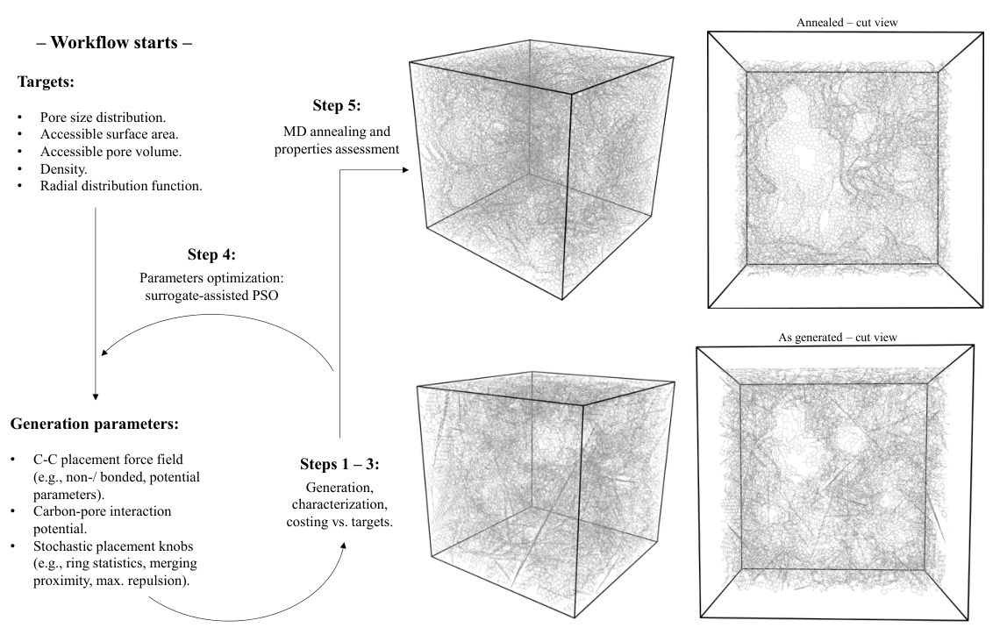
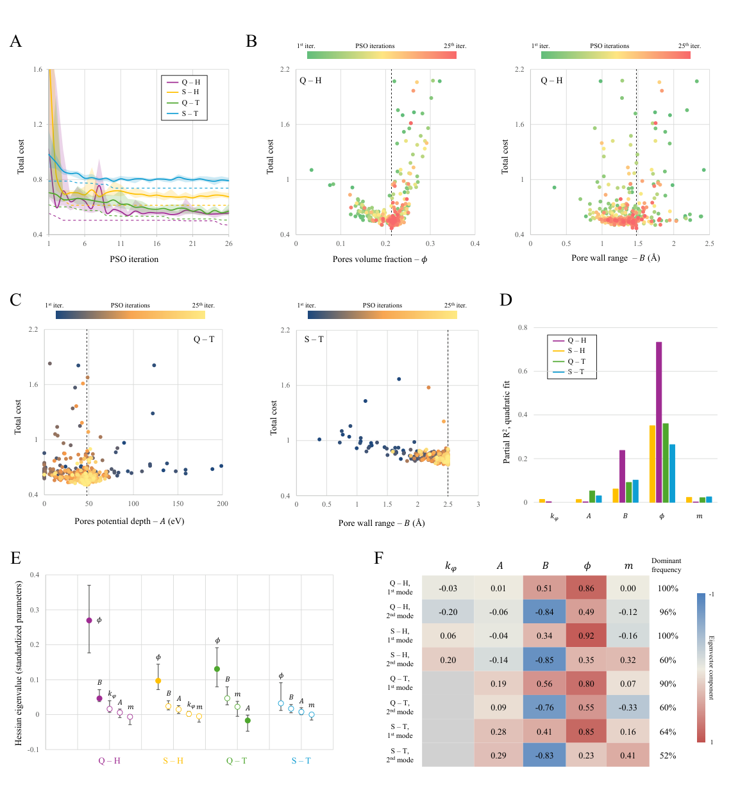
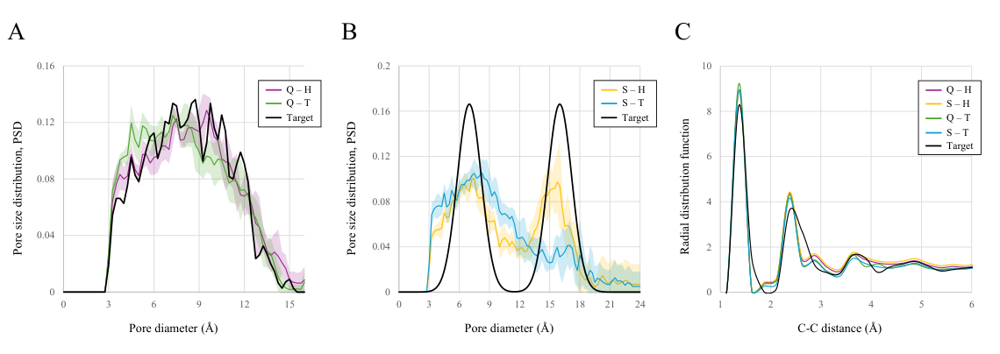
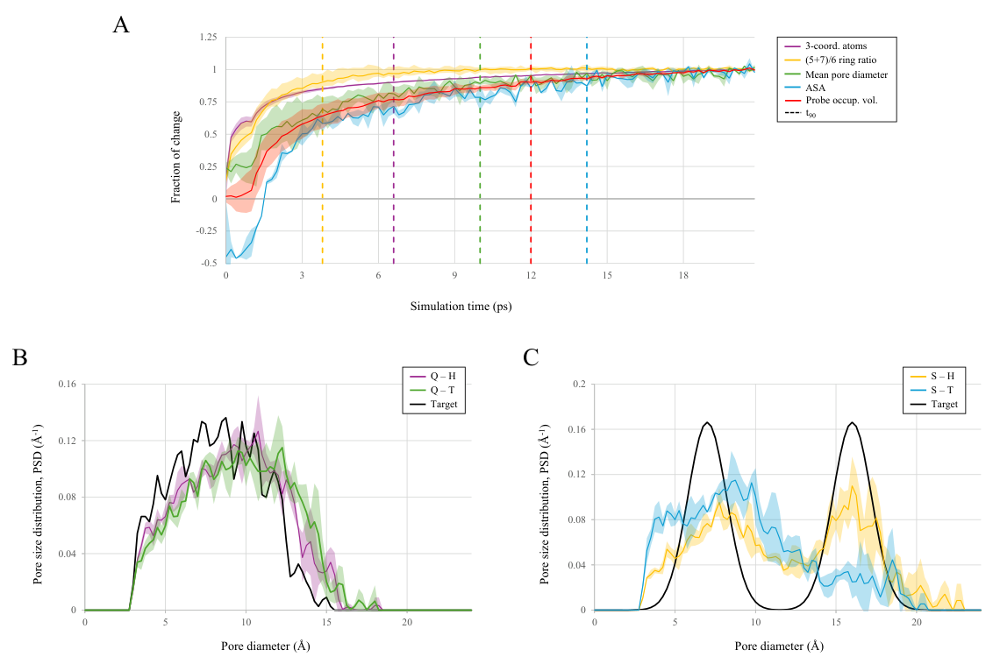
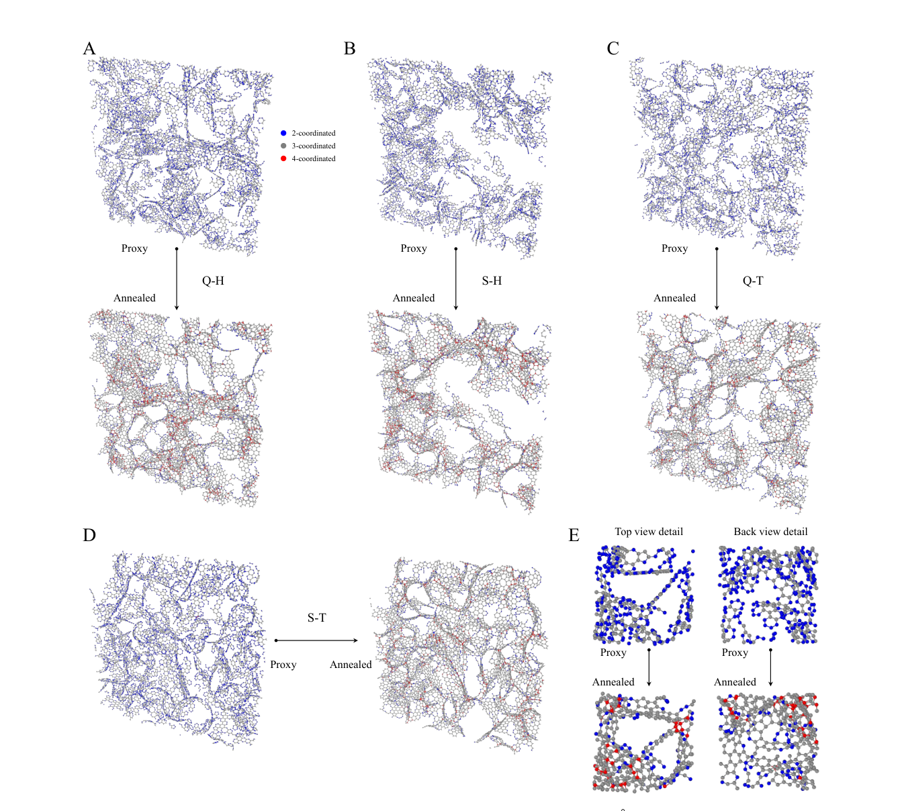

先规定孔，再长出碳骨架：无序纳米多孔碳的孔径分布逆向设计
论文原文 ↗论文：Matteo Alberghini、Giacomo Pierotti、Maryam Amini、Mauro Sgroi、Alessio Tommasi，Explicit pore pre-conditioning and inverse design of amorphous nanoporous carbon，arXiv:2611.06614，2026。官方页面 ·
多孔碳的储能、吸附和传质性能，不仅取决于碳的质量和比表面积，也取决于孔到底有多大、不同大小孔各占多少、孔道怎样连接。传统原子建模通常先规定密度，再把随机碳结构加热、淬火或长时间退火，最后检查产生了什么孔。这样得到的孔径分布受势函数和热历史支配；想指定一条复杂分布，尤其同时包含两组不同孔径的双峰分布，就缺少直接入口。
本文把顺序倒过来：**先按目标孔径分布放置空洞，再围绕空洞逐环生长碳，最后用短分子动力学退火补全成键。**粒子群优化负责从目标结构指纹反推构建参数。新增的能力是让“孔的整条分布”成为设计输入，同时保留无序碳骨架，而不是用几个平行石墨烯狭缝代替真实网络。
一、从一条目标孔径分布，怎样得到原子结构

图1｜目标结构指纹→参数化随机构建→表征与打分→粒子群更新→分子动力学退火。右侧比较构建态与退火态。
以论文的双峰例子为例，目标是让孔体积的一半集中在约 7 Å，另一半在约 16 Å，总体密度设为 0.95 g cm⁻³。首先在周期性盒子中放置球形排除区，碳原子不能进入。球可以相交，因为交叠部分只是共享同一段空洞。
这里有一个很容易忽略的步骤：孔径分布通常按孔体积加权，放球程序却是逐个计数。一个 16 Å 球的体积约是 7 Å 球的 12 倍，因此两组孔体积相等，并不意味着两种球放一样多。程序先把目标体积分布除以孔径的三次方，转换为数量采样分布，再逐个放球，直到达到指定的放置体积分数 φ。
随后播下一个碳环，以尚未饱和的边缘原子为锚点，逐步接上新环。生成以六元环为主，也允许五、七、八元环；非六元环使片层能够弯曲。候选环先调整取向，再检查是否穿入孔区、是否与已有原子过近，以及构建能量是否满足接受条件。很近的原子可以合并，让原先分开的片段连接；生长持续到目标密度。
作者比较两种构建规则：一种用键长、键角和二面角等谐和项控制新环几何；另一种使用文中称为 Tersoff-contact 的接触判据。后者在计算候选环时排除了锚点及其近邻成键网络，主要约束新环与远处骨架的接触。两者都是放置阶段的结构规则，之后的退火统一改用 EDIP 反应性碳势。
放进去的球与最终测出的孔不完全一样：碳会与孔壁保持距离，片段之间也会额外留下空隙。因此程序每次都重新测量实际生成结构的孔径分布、密度、可达表面积和径向分布函数。径向分布函数描述离某个原子一定距离处出现其他原子的概率，负责约束局部原子排列；孔径分布则约束较大尺度的空隙几何。
二、粒子群搜索什么，怎样判断生成得好不好
优化器主要调整五个构建参数：放置孔体积分数 φ、孔壁作用深度 A、孔壁作用距离 B、新环离开原片层的二面角刚度，以及原子合并距离系数。它们控制空洞占多少、碳离孔壁多远、片层如何弯曲和相互连接。
每个粒子是一组参数。程序用它生成结构，将各项性质相对目标的偏差无量纲化后相加。孔径分布用“搬土距离”比较：可以理解为把生成分布变成目标分布，需要把孔体积沿孔径轴搬动多远，因此整条曲线的形状都参与打分。每组参数用七个随机种子重复构建，平均成本降低随机放置的影响。
粒子根据自身历史最佳位置和群体最佳位置更新，经过 16 个粒子、25 次迭代，逐步靠近低成本区域。作者另外拟合二次响应面提出补充候选，但文中这些候选没有进一步刷新最优值，展示的收敛收益主要来自粒子群搜索。

图2｜四组搜索的收敛与参数作用。Q 为淬火分子动力学目标，S 为双峰目标；H 与 T 分别对应谐和构建和 Tersoff-contact 构建。
作者还把搜索历史用来回答：目标究竟约束了哪些参数？若改变某个参数组合，成本马上上升，说明目标对它敏感；若变化后成本几乎不变，则许多不同取值都能产生相似结果。对三个成功搜索，φ 是最稳定被确定的参数，孔壁距离 B 次之；刚度、壁深和合并系数则相对宽松。这给出了一项实质认识：当前结构指纹主要通过“放多少孔、碳离孔多远”控制全局几何。
三、结果：既能恢复淬火碳，也能构造双峰孔系

图3｜A 为淬火碳目标，B 为 7 Å 与 16 Å 双峰目标，C 比较构建态径向分布函数。黑线为目标，彩线为不同构建规则的结果。
第一组目标来自一个 100 Å 盒子的淬火分子动力学参考碳。其密度、可达表面积和探针可占据孔体积分别为 0.950 g cm⁻³、1,580 m² g⁻¹、0.518 cm³ g⁻¹。谐和构建恢复出的相应数值为 0.942、1,528、0.493，偏差均在约 5% 以内。其中孔体积并没有进入这次优化的评分，因此它也相近，说明孔网络恢复并非只靠逐项拟合标量。
两种构建规则都能较好重现淬火碳的宽孔径分布，分布搬移距离分别为 0.12 Å 和 0.18 Å，约为目标平均孔半径的 3% 和 4%。
双峰目标更能区分规则。谐和构建在目标的两个直径附近恢复出两个峰，小孔组占孔体积 56%，接近设定的 50%。Tersoff-contact 构建则未恢复完整双峰：它在密度与孔分布目标之间出现冲突，最终通过少放孔来降低成本。搜索历史中参数停在边界、没有稳定敏感方向的特征，也识别出了这一失败。这里的成功与失败都围绕同一问题：构建规则是否真正提供了实现目标孔几何的自由度。
四、短退火补全局部成键，孔分布保留形状
构建态满足孔几何，但碳片层有许多尚未闭合的边缘。作者把最佳结构交给 LAMMPS，以 EDIP 碳势进行总计 39.1 ps 的退火：升至 2,500 K、保温 20 ps，再降至室温；孔区保留为纯排斥墙，让网络重排时保持孔洞。

图4｜A 为局部成键与孔结构完成变化的时间过程；B、C 为退火后的宽分布和双峰分布。
退火后，二配位原子从约 49% 降至 11%—14%，三配位原子由约 50% 升至 78%—82%，接近参考碳的 80.9%。骨架密度也从 2.15—2.25 提高到 2.30—2.35 g cm⁻³，接近参考的 2.31；孔网络平均连通数接近参考。这把按几何搭出的碎片网络，转成更完整的弯曲、连通碳骨架。

图5｜蓝色为二配位边缘，灰色为三配位，红色为四配位；退火使开放边缘减少、片段接合，孔洞仍然保留。
退火也使孔略微变宽。对淬火目标的两组生成结构，平均孔径增加约 0.8 Å 和 1.5 Å，主要表现为分布整体平移，原有形状得以保留；谐和构建的双峰形状同样保留下来。局部成键变化通常在更早的几皮秒内完成，孔结构随后调整，在约 15 ps 的保温时间内趋于稳定。
这篇工作的价值，在于把介观孔几何的设计与局部碳化学的弛豫分开处理：目标分布和随机生长先提供想研究的无序结构，MD 再补成键。对于指定目标，参数搜索做一次，之后可反复随机生成同类结构并短退火。这使研究者能够围绕电解质或吸附质需要的孔分布建立结构系列，进一步研究孔几何与无序骨架共同决定的材料行为。
原始摘要完整中文翻译
多孔碳用于储能、气体捕集和水净化，其性能强烈依赖孔的几何结构。原子模型主要通过分子动力学模拟其合成，所得结果依赖原子间势，而且孔网络是模拟输出，而不是预先规定的要求。在这里，我们表明孔网络可以作为输入：从目标尺寸分布抽取的孔填满规定的体积分数，随后通过随机放置碳环在孔周围生长碳骨架，再由粒子群根据结构指纹恢复构建参数。搜索将一种淬火分子动力学生成碳的密度、表面积和孔体积复现到约 5% 以内，并复现了其孔径分布。作为压力测试，它还恢复了双峰分布；搜索历史则揭示目标约束了哪些参数，并标记出失败的搜索。短时间退火补全网络，使配位接近参考结构，同时孔径分布保留其形状。分子动力学仍负责局部化学，而孔几何则成为针对给定应用的设计变量。